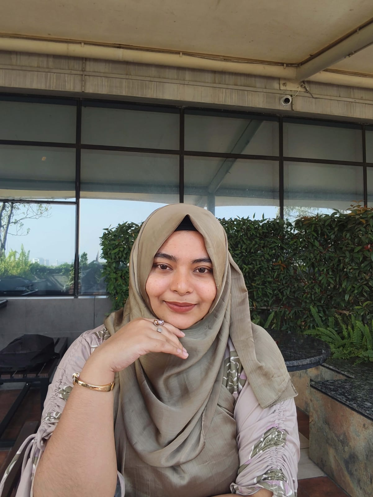

|
 |
| I am a Computer Science & Engineering student with a strong passion for Mathematics. I enjoy solving mathematical problems and using analytical thinking to understand Algorithm, Programming Concepts And Real-world Computational Challenge. Recent also been focusing on research work, particularly writing and understanding research abstracts. |
|
Name: Isratul Ibnat Orpa Job Title: Student Address: Mirpur-1, Dhaka, Bangladesh |